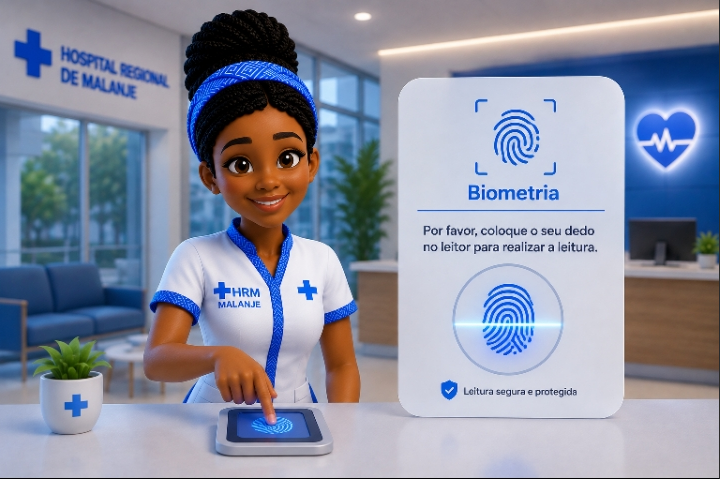
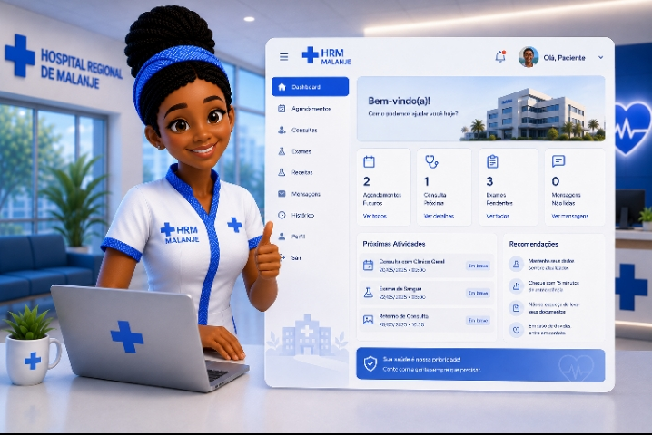

👋 Olá! Sou a VITA, sua assistente virtual. Vamos guiá-lo(a) pelos primeiros passos no VITALINKA!
👋 Bem-vindo(a) ao VITALINKA!
Estamos muito felizes por tê-lo(a) connosco. Antes de começarmos, gostaríamos de saber como prefere ser tratado(a).
Este nome será usado para personalizar a sua experiência.
Etapa 2 de 10
Olá, Utilizador! ✨ A partir de agora, utilizaremos o seu nome para personalizar a sua experiência.
👤 Olá, Utilizador!
A partir deste momento, utilizaremos o seu nome durante toda a navegação para proporcionar uma experiência mais personalizada e intuitiva.
A sua experiência será única e adaptada a si.
Etapa 3 de 10
🔒 Para reforçar a segurança da sua conta, pode registar a sua impressão digital. Este procedimento é opcional.

🔐 Verificação Biométrica (Opcional)
Para reforçar a segurança da sua conta, poderá efetuar o registo da sua impressão digital.
Este procedimento é opcional e pode ser realizado posteriormente.
Clique para simular a leitura biométrica
Aguardando leitura...
Etapa 4 de 10
📝 Vamos criar a sua conta! Siga os passos abaixo e preencha os dados corretamente.
📝 Criação da Conta
1. Aceda ao endereço oficial do VITALINKA.
2. Clique em Criar Conta.
3. Preencha os seus dados pessoais.
4. O sistema irá gerar automaticamente o seu e-mail institucional.
Exemplo: anasouza@vitalinka.ao
8+ caracteres Maiúscula Minúscula Número Caractere especial
A palavra-passe deverá ser confirmada e ambas deverão coincidir.
Etapa 5 de 10
🎉 Parabéns! A sua conta foi criada com sucesso. Agora já pode iniciar sessão.
🎉 Parabéns!
A sua conta foi criada com sucesso.
Agora já pode iniciar sessão utilizando as credenciais criadas.
Agora está pronto(a) para explorar o VITALINKA!
Etapa 6 de 10
👤 Selecione o perfil correspondente à sua função. Cada perfil possui funcionalidades e permissões específicas.
👤 Escolha do Perfil
Na página de autenticação, selecione o perfil correspondente à sua função.
Cada perfil possui funcionalidades e permissões específicas.
Etapa 7 de 10
🔑 Após introduzir as credenciais, o sistema solicitará um código de verificação (OTP) para confirmar a sua identidade.
🔑 Validação da Conta
Após introduzir as credenciais, o sistema solicitará um código de verificação (OTP) composto por 6 dígitos.
Este código será utilizado para confirmar a sua identidade e aumentar a segurança da conta.
_
_
_
_
_
_
Campo ilustrativo para introdução do OTP
Etapa 8 de 10
🚀 Depois da validação, será redirecionado para o seu Dashboard, onde encontrará todas as funcionalidades disponíveis para o seu perfil.

📊 Entrada na Plataforma
Depois da validação da conta, será redirecionado para o seu Dashboard, onde encontrará todas as funcionalidades disponíveis para o seu perfil.
O sistema apresentará apenas os módulos e ferramentas autorizados para si.
Segurança e personalização garantidas para o seu perfil.
Etapa 9 de 10
💬 Caso necessite de ajuda, a nossa equipa de suporte está disponível para si.
💬 Suporte
Caso necessite de ajuda, entre em contacto com a nossa equipa de suporte.
(+244) 921 151 685
antoniodiogo958@vitalinka.ao
Segunda a Sexta-feira, das 08h00 às 17h00
Etapa 10 de 10
🏁 Parabéns! Concluiu o processo de apresentação do VITALINKA. Gostaríamos de conhecer a sua opinião.
✍️ Assinatura Digital e Avaliação
Parabéns! Concluiu o processo de apresentação do VITALINKA.
Agora gostaríamos de conhecer a sua opinião.